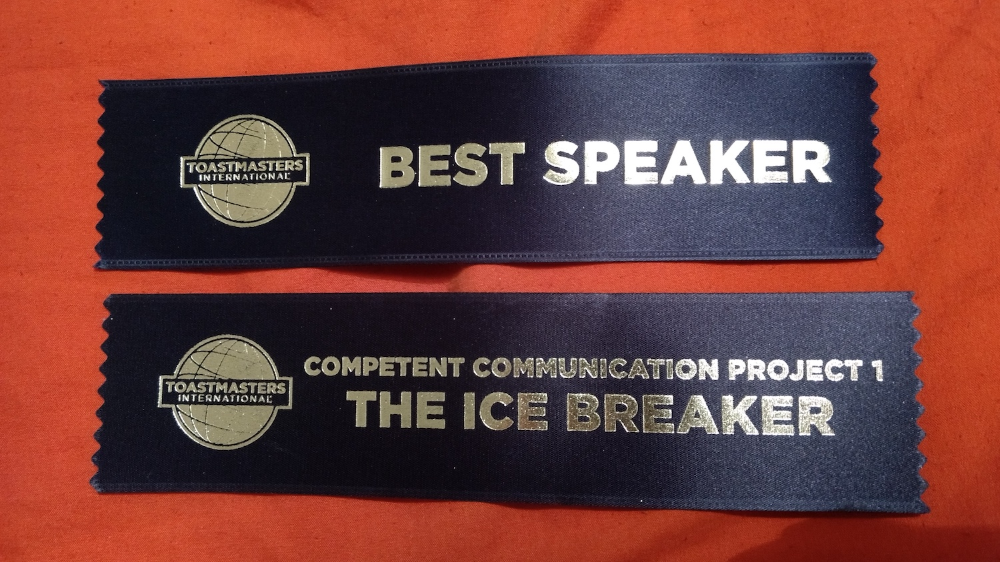

Five days ago, I gave my first speech at Toastmasters - the first out of ten outlined in the official manual.
It’s 4–6 minutes long and designed to be all about the speaker — it’s called The Icebreaker.
Due to being busy with a conference speech, I was only able to speed-write this 2 days before giving it.
Nevertheless, thanks to the brilliant people who'd helped me practice my larger speech, I delivered this one fantastically!
Out of 4 speakers, the audience voted mine the best.
I think they were pleasantly surprised at how far I'd come since I started to attend Toastmasters as a guest a few months ago. Not nearly as surprised as I am though.
Here is my speech:
Pictures, Psychology and Piano
We all have a past, present, and future. This is something universal between all of us. We commonly tell other people about these things using stories. I thought up a little story to describe my past, present and future.
In my past, I spent a lot of time admiring pictures. Perhaps this love of pictures came from my mother. Always modest and humble, it was difficult to get my mother to admit she was good at anything. Although that didn’t stop her cheeks from glowing when you talked about her many skills. One of these skills was drawing. She doodled on napkins, scribbled on corners of paper while on the telephone, crafted beautiful greeting cards for family. When I was a baby, she painted lifelike cartoon characters on my bedroom wall. Every photo she took, she would print, date and organise neatly into labelled boxes. All of this meant that pictures were a natural part of my life. I drew my own pictures – portraits of friends, of animals and cityscapes. I took my own pictures, thousands of them. I spent hours editing them, posting them online and putting them on my wall. Additionally, I spent a lot of time admiring the drawings, photos and designs of others. They communicated things to me – ideas, stories, emotions. They connected me with what it is to be human and I loved that.
In my present, I use a lot of psychology. Although, I can actually count psychology as part of my past too, as I’ve been immersed in it for nearly 10 years now. Why so long? Well, it seemed like a natural thing to study for me. And I think this was partly down to pictures. They had fostered in me a fascination about the things that connect us – about ideas, stories and emotions. I studied a lot, then I worked lot, and then I studied again – this time getting my Master’s in Child Psychology. I’d known for a while that I would love to work with children, but it took me some time to figure out why this was. I thought about it and came up with the best explanation I could. I knew that childhood is the time we first begin to connect with others, figure out our emotions, and learn how we fit in the world. I remember it being a magical time of discovery for me – beginning with my Mum and her way with pictures, progressing through to me finding my own way with them, which opened up the joy of sharing and connecting with others –pause-. I became passionate about uncovering as many ways as I could to help children learn how to connect with others. I want every child to experience the magic of doing this – to help them discover the power of ideas, the delights of stories and the nuances of emotions.
In my future, I’d like to continue learning about the many ways to bring people closer together. I don’t actually work in the field of psychology any more – I work a Web developer. But, the world of Web development has so much psychology in it. It basically consists of a bunch of humans communicating with humans in order to make things for humans –pause- I haven’t talked about the last thing in my talk title tonight – pianos. I put piano in the title partly because it begins with ‘P’, which gives the title some nice alliteration, but also because the piano is something I’d really like to learn. After all, music is at least one other way to communicate.
So, I’ve talked to you about my past, present and future. It was one story. I could’ve crafted any number of stories about these things. And, this is something I might try. Each would be a piece of me I could keep forever. I encourage you to try it.
Also published on Medium.